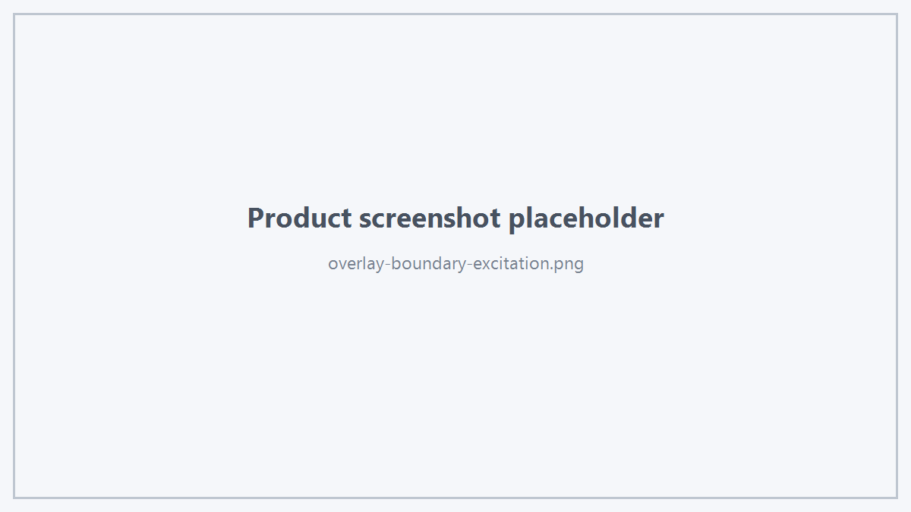

Hts Viewer SDK 提供面向工程软件的公开 Overlay / Annotation 能力。
1. Face Overlay Data
struct HtsFaceOverlayData
{
std::string objectId;
int faceTag;
std::vector<HtsVec3d> lineVertices;
std::vector<HtsVec3d> fillTriangleVertices;
};
其中：
- lineVertices 按两点一组表示线段；
- fillTriangleVertices 表示预计算填充三角形；
- objectId + faceTag 用于关联业务 Face。
2. Boundary Overlay
viewer.showBoundaryFaceOverlay(
"Boundary_Port1",
data);
3. Excitation Overlay
viewer.showExcitationFaceOverlay(
"Excitation_1",
data);

Boundary and Excitation
4. Remove
按 key 删除：
viewer.removeFaceOverlay(key);
全部：
viewer.clearFaceOverlays();
5. Plane Wave Glyph
HtsPlaneWaveGlyph glyph;
glyph.id = "PlaneWave_1";
glyph.anchor = {0.0, 0.0, 0.0};
glyph.propagationDirection = {0.0, 0.0, -1.0};
glyph.electricDirection = {1.0, 0.0, 0.0};
viewer.showPlaneWaveGlyph(glyph);
删除：
viewer.removePlaneWaveGlyph("PlaneWave_1");
6. Plane Wave 主要参数
公开参数包括：
- anchor；
- propagation direction；
- electric direction；
- automatic / fixed world size；
- theta / phi sweep；
- polarization angle；
- amplitude；
- phase；
- polarization；
- ellipticity；
- propagation / electric / magnetic / wavefront / label 开关；
- always on top；
- 各部分颜色。
Polarization：
LeftElliptical
Linear
RightElliptical
7. 业务建议
Overlay 应用于业务标注，而不是替代正式 CAD Geometry。
Boundary / Excitation 的 key 应由业务层稳定管理，以便更新和删除。
 1.18.0
1.18.0